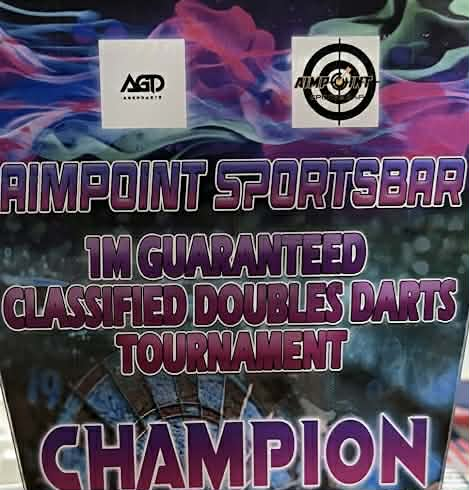
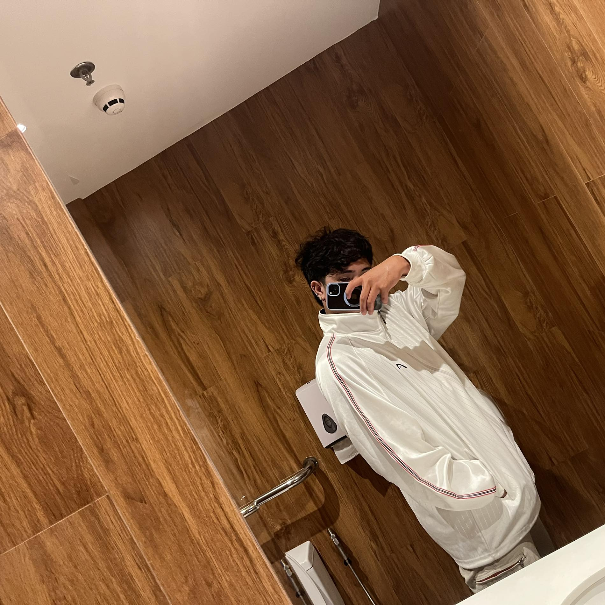
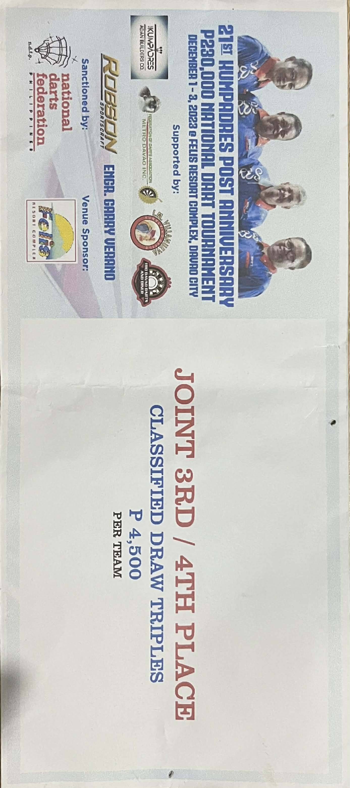
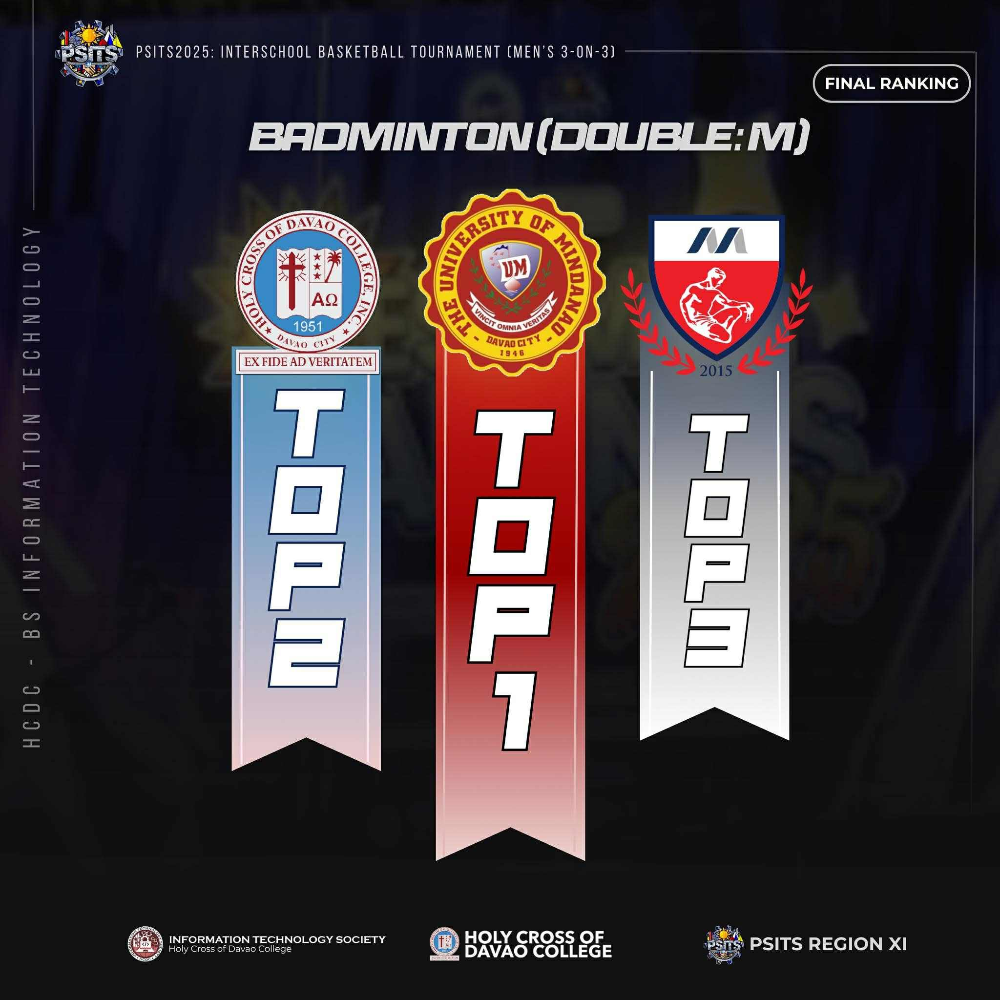

Dart Champion 2024 Gensan
Won a major local darts competition and strengthened consistency under pressure.
Information Systems Student
I'm a |
2nd Year MMCM student building practical school and personal projects while competing in darts and badminton.

Current Focus
UI projects, class systems, and competitive sports
About Me
I am Janichero Y. Peresores, an Information Systems student from MMCM. I enjoy turning ideas into working apps, learning through hands-on builds, and improving both in academics and competition.
Achievements

Won a major local darts competition and strengthened consistency under pressure.

Placed in the top four as part of a 3-man team in a competitive regional event.

Reached the podium in badminton through disciplined training and tournament focus.
Projects
An early mobile app build that helped me learn layout, structure, and user flow basics.
Open RepositoryA sustainability-focused system project built to present a clearer environmental monitoring idea.
Open Live ProjectA game stat review concept for checking player data and presenting it in a simpler format.
Open Live ProjectContact
If you want to connect about projects, classes, or opportunities, reach out through my GitHub profile and project links.
Visit GitHub